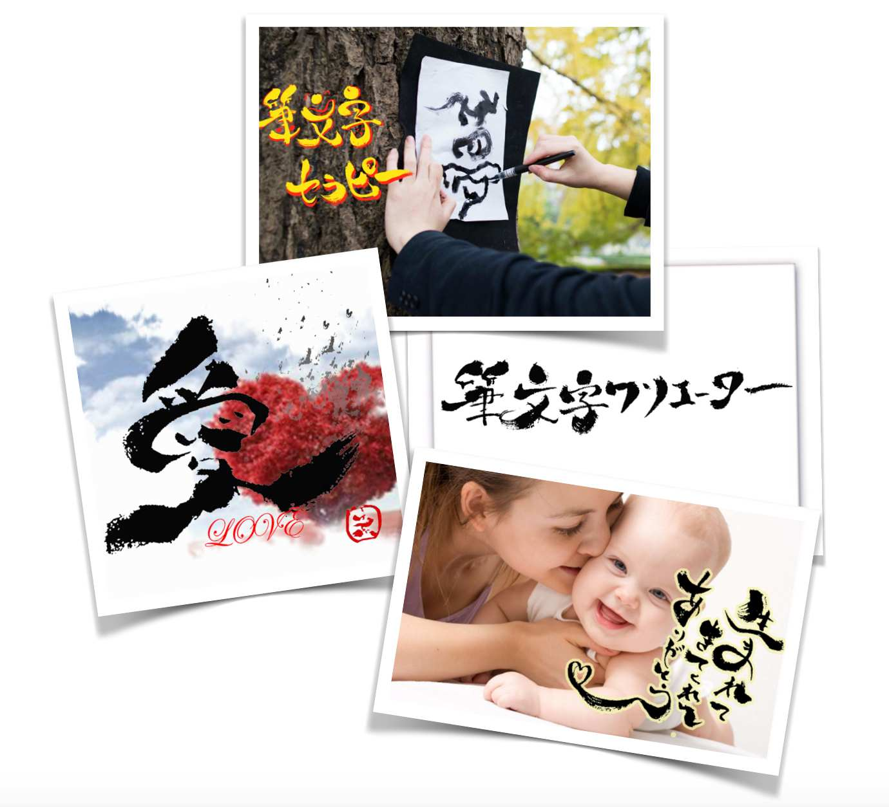
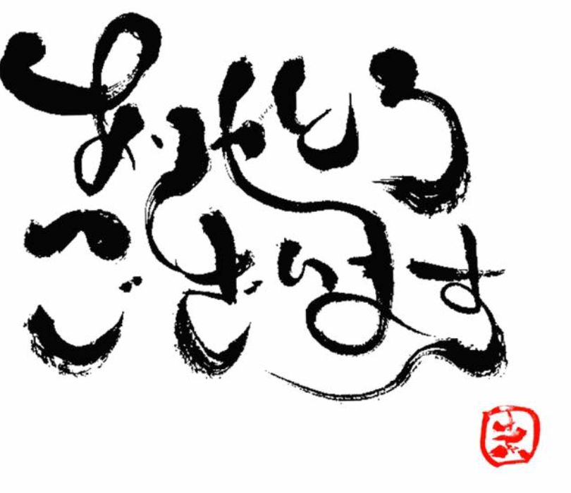
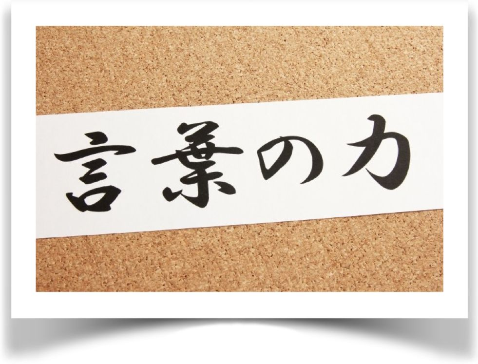
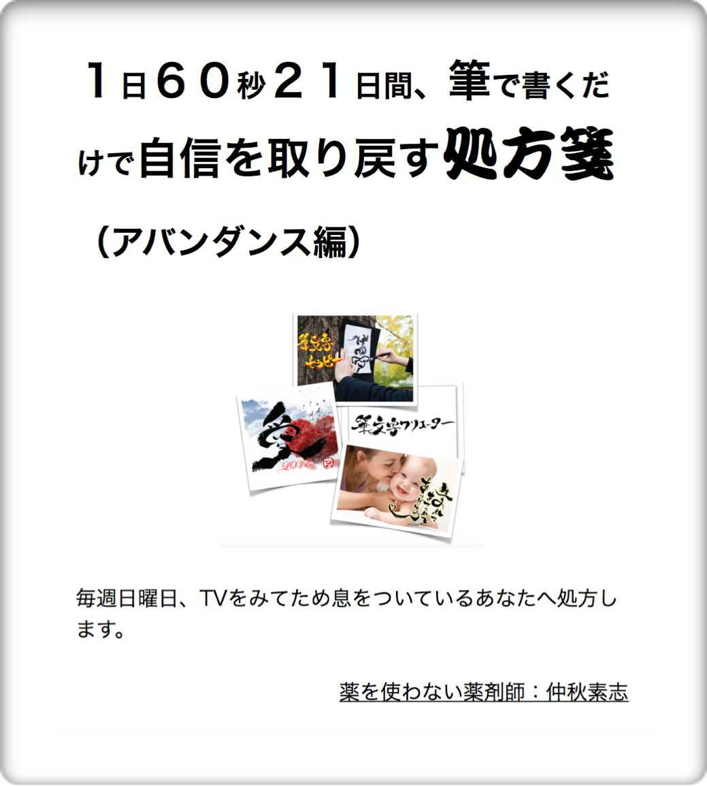
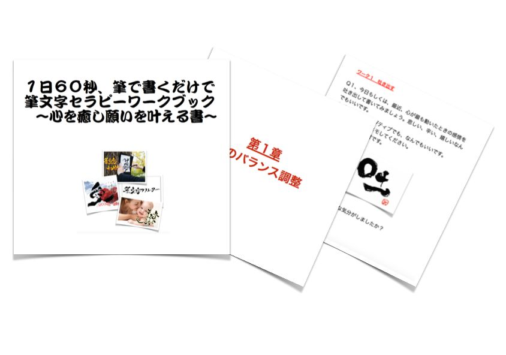

| １日６０秒、筆で書くだけで夢が叶う処方箋（マニフェスト編）: 目的を叶える決断力があり、心が強くになりたい人におくります 筆文字セラピー (フューチャーヘルス) | |
| 仲秋素志 | |
| (2016) | |
１日６０秒 、筆で書くだけで 夢が叶う処方箋 （マニフェスト編）

目的を叶える決断力があり、心の強い人になりたい人におくります
健康伝導師 仲秋素志
本をご購入いただき本当に

目次
６−２ アファメーションのルールにしたがって書く文字を決める
１日６０秒、筆で書くだけで夢が叶う処方箋（マニフェスト編）をお買い上げいただきありがとうございます。
本書は、１日６０秒、２１日間筆で書くだけで自信を取り戻す処方箋（アバンダンス編）の続編としてかかれた本です。
本書の中には、ところどころ、前作の要素をご紹介しているところがありますので。
詳しく知りたい方はそちらをご覧いただけるとよりわかりやすいかと思います。
購入ページはこちら
自信をとりもどしながら、もっと速度をあげて夢を叶える方法に、この筆文字セラピーはとても有効なものです。
本書は、私自信が夢を一歩一歩、自分と向き合いながらメンタルブロックをセラピーではずしつつ、マニフェストして実現してきたのに使った方法です。
本書を実践していくことによって、ストレスをなくし、モチベーションをあげることができ目標や夢を実現することができると信じています。
はじめまして、私の名前は、
仲秋素志と申します。
私は、いま、こうして書籍を出させていただき、皆さんとコンタクトをとれているのですが
私がビジネスをはじめたころ私が発信する内容が人に響かなかったり、セミナーを開催しても ０人という日々が続いていました。
そんな中、自分のやる気はどんどん落ちていき、しばらくうつ状態、人もその状態をみると、近寄ってこなくなり、余計におちこんで 家に引きこもってばかりでした。
当時、筆文字のセラピーとしての活動を開始していたのですが、心と向き合うことばかりをしていた私ですが、ある日、別のセミナーでやったことをとりいれたたことで、行動が劇的にかわるようになりました。
すると、そのモチベーションからか人が集まりだしたのです。
そして、セミナーもうまくいくようになり、こうして、書籍を書くまでにいたるようになりました。
自信のない性格も手伝っていたのですが、セラピーにより改善し、もっと行動力があがったので、これをもっと伝えたいと思いました。
私はもともと薬剤師という職業でしたので、人が健康になるには何が必要か考えていたのもあり健康とは自分のなりたい姿ということを、いろいろな患者さんと接しながら、いろいろな勉強をしていく中で気がつきました。そしてこれに応用したいと考えるようになりました。
本書を通じて、私が経験したことを実践を踏まえながらお伝えしていきます。
どうぞ最後まで楽しんでください。
突然ですが 夢や目標はありますか？
今、多くの若者が夢や目標を見失ってきています。
安心した生活をしたい、そんな目標をたてている人が多いです。
給料がもらえて、結婚して、子供をそだてて普通に生活ができればそれでいいという人だったり
公務員になって、時間で仕事をして楽をしてすごしたい。
結婚は人間付き合いが面倒だからとか、そう思っている方が多いです。なぜこのような、人が増えてしまったのでしょうか？
危険をおかしてまで、やりたいと思わないようになってしまっています
なぜこのような、人が増えてしまったのでしょうか？
それはある神話が崩れてしまったからです。
それは、よい会社に入れば一生安泰、ここで頑張れば成功し、お金にこまらないという生活がまっている。
公務員になれば、時間でかえって一生仕事にこまらない、結婚すれば、幸せになれるという妄想を、ちょうど昭和の終わりに子供時代をすごした、ちょうど私の世代のスリこまされた思い込みが
２００８年におこったリーマンショックにはじまり、倒産する会社、不景気によるリストラ、人員削除、派遣切り、熟年離婚など、取り上げるニュースは悪いことばかりまた年金問題など
日本の将来に関して、諦めてしまったのです。
この頃に、社会にでてきたり、学生だった人が将来の希望を失ってしまったんです。
有名な会社につとめても、リストラ、結婚しても熟年離婚、働いて税金をおさめるのも嫌になってしまう気持ちが湧いてくるのも無理はありません。
もはや、働くとか結婚に対する安全神話は崩れてしまったのです。
自分の進むべき方向をみうしなってしまった時代だと言えます。
しかし、このまま行けば、どっちにしても地獄になってしまいます。
お金や人間関係からさけていれば、手元には何も残りません。
そこで、企業に御世話にならないようにと起業する人もいますが、そのような状態でうまくいくはずもありません。
そんな時代だからこそ、今、個人が立ち上がるときだと思います。これからは個々の人間が活躍する時代です。
会社でも、起業家でも、情報発信が自由にできる時代だからこそ、個々が活躍しやすい時代と言えます。
だれもが芸能人のような人間になれるチャンスなのです。
しかし、このチャンスに、行動できないモチベーションをたもつことができないのがとてももったいないことです。
なにもしないというのは、時代は流れていますので、立ち止まっているように見えますが、時代の流れからみたらどんどん後退しているのと同じです。
どんどん、時代遅れとなっていきます。
行動しなければ現実はかわっていきません。結果もでません。
現状維持が続くだけです。
そうならないためにも、この本で、行動力を身につけて夢を叶えていただければと思います。
人はなぜ行動できないのでしょうか？
例を出して説明します。
登山にいく集団があったとします。
この集団ですが、特に体力もある若者ばかりだとします。登山をはじめた結果、だんだんと登山のスピードに違いがでてきて、目的地に到着できた人とそうでない人がでます
全員が同じ、体力だとしてもなぜこういうことがおきるのでしょうか？
①そもそも、その山を登りたくなかった
②地図を持っていなかった
③途中で体調を崩したり怪我をして諦めた
④なぜか足が重たくて、途中で断念した
この行動という行為が登山だとします。
行動できない理由を順に考えていきます。
これが
①そもそも、その山を登りたくなかった。
です
簡単に言えば、must(〜しなければならないで行動していた）ということです。
集団でいる、つまり今の会社と同じです、集団でその目的を達成するために行動するのだけれども、その目的を成し遂げたいと思わない状態です。
しかたなく、一緒にいる。という状態は苦痛ですよね。嫌いとかそういう理由ではなく、自分のなりたい人生がそれではないということです。
もっとわかりやすくいうと、本当はヨーロッパに行きたいとなんとなく思っていたのにグループで所属しているからしかたなくアメリカにいこうとしている状態です。
これは自分の意思ではなく、他の意識に振り回されているということです。これは多くの人が無意識にやってしまっています。
意外に、集団でいった目的地のほうがよかったということもありますが、そうでないときは、ストレス以外のなにものでもありません。
これは自分の行きたい方向をはっきり示すことで、そこに無理に加わらなくてもいいようになります。環境をかえることはできるのです。
つまり、この行動をするのに必要なものは理由です。
なぜ登山をするのか？なぜその目的地を選んだのか？です。
これを確認するとことで
want to（〜したいがみつかります）
これがモチベーションになります。
ただしょうがなかったというのはエネルギー的に弱いものになります。だから途中で嫌になってしまうのです。
〜したいというエネルギーに転換していきましょう。
これが
②地図を持っていなかった
です
地図を持たずに臨んしまい、迷子になってしまったということです。
これは、あらかじめ計画を練っておく必要があります。
ポイントポイントをしっかり、定めておきます。
計画をしっかり練っておけば、迷うことはないです。
道標をしっかり、明確に考えておくことです。
そうすれば迷うことはないです。
そのためには、どんなもんが必要なのかもかんがえておくといいですね。
これが
③途中で体調を崩したり怪我をして諦めた。
です。
なぜ怪我をしてしまってやる気がなくなってしまったのか？それは途中で休憩をいれなかったり、あえてきつい道を選んでしまったり、ハードルをあげて、くじけてしまったからです。
なぜ、怪我をしてしまったのかひとつは、練習や準備が足りなかった、日頃鍛えてもいないのに、登山を無理にしてしまった。
急な壁をのぼろうとしてしまった。
ということです。そうすると自分への自己嫌悪感に襲われます。
一歩一歩着実にすすめる行動計画をたてることで改善していきます。
そのためにも、高い最終ゴールがあり、階段を小さくすればそれだけ、時間がかかりますが、着実にいくことができるのも大きなメリットです。
着実に力がついていき、無理はしなくてあきらめる必要はなくなりますし怪我（失敗もすくなくなります）
またたとえ怪我をしたとしても、ころがりおちる心配もいらないということです。やり直しがなんどもききます。
これが
④なぜか、足が重たくて、途中で断念した。
です
いわゆる、これがメンタルブロックです。無意識、つまり潜在意識が行動に足かせをしながらやっている状態です。
一つは①の本当の目的が違っていた、そのほかに、その行動を起こすことになにか抑制的な意識が働いていたということです。
これについては、筆文字セラピーのデトックス編をすることで明確にしていくことができます。
そちらの方を参考にしていただければと思います。
突然ですが、数学は得意ですか？
この公式がどんな役にたつの？
そんな疑問を抱きながら、学んだ方はおそらく数学が嫌いだったと思います。
ここでは、わかりやすく、行動力をかえる公式についてお伝えしてますので、ご安心ください。
その公式とは
行動力＝自分への期待ー心配
です。
この行動が大きくなればなるほど、行動でき
この行動がちいさければ小さいほど、行動できないと
いうことになります。
行動力を大きくするには？どうしたらいいのか？
すこし、数学的な考え方をすると
いろんなパターンが考えられます
①「自分のへの期待」をあげる
②「恐怖・不安」を小さくする
③「恐怖や不安」の不等号をかえる
です。
です。
順に説明していきます。
自分への期待＝自分への自信
でもあります。
自分に期待すること、つまりワクワクすることや好きなことが多いほど、行動したくなります。
どうしたら、ワクワクするのか？というと１つはそれが楽しいことだとわかっているときです。
これがイメージしにくいときは別のメンタルブロックが働いている可能性があります。
自分への期待をしないことで、なにかメリットがあるから自分の期待をおさえているというところです。
それには過去の出来事などが関連していることがありますので、セラピーの方をやってみてください。
もうひとつは、脳を勘違いさせてしまう方法です。
心配があれば、当然、恐怖や不安があり行動する範囲や量などにも制限をかけてしまうため、行動力が小さくなります。
心配とは
調査によると
４０％はありえないことへの心配
３０％は過去の出来事対する心配
１２％は健康
１０％は全くささいな心配
８％は重大な心配
とほとんどが取り越し苦労が心配といえます。
先ほどのこの式を変形すると
行動＝自分への期待ー心配
自分への期待＝行動＋心配
と変わります
心配しながら行動する、石橋を叩いてわたっていることで、自らの自信としています。
つまり、自らの心に恐怖や不安をつくることで安心（自分への期待）をえているのです。
２−２で心配＝恐怖や不安とお伝えしました。それが安心につながっているとお伝えしました。
安心への欲求になるとき、どうなっているのか？それは不等号がかわっているのです。
どういうことか？
ひとは安心していたいから、もし失敗などしても、この心配のせいにできて自分のせいにしないで済むからです。
裏の意味にしたとき不等号がかわって、行動につながります。安心という欲求を行動にエネルギーにかえていくことがでるのです。
立ち止まるということが、安心につながらないとしたらそれは行動をおこせるということです。
第１章ででてきました、なぜ行動できないのか？原因についてですが、対処方法をお伝えしました。
全部をまとめると
ゴールのイメージを描く
今のまま現状維持では、なにもかわりません。
かといって、むやみに行動しても迷子になることがおきます。
そのために必要なことは、ゴールをしっかりしておくことです。
なぜ、あなたの望むものになれないのか？というと自分のゴールまでの地図がしっかりできていないからなんです。ゴールにはなにがあるのか明確に描かれていないと、そこにたどり着く術すら、考えつきません。
行動は思考、感情でかわってきます。
なにか、別のものを映し出してしまっていたとしたら
それは別の場所にたどり着きます。
それはひょっとしたら、ネガティブなものかもしれません。
ネガティブの否定形で考える方法での選択をしてしまうとき、〜したくないからと考えると潜在意識はそのイメージをしてしまいます。
例えば貧乏になりたくないからと思った瞬間、貧乏というイメージが湧いてしまうのです。
それが俗にいう引き寄せという現象です。
あたかも、それがやってくると覆われがちですが、自分でみつけているというのもあります。
それを無意識でやってしまうのが言葉の力です。
自己イメージをあげることができます。
人は１日なんと５万回も自分と会話しているそうです。
会話といっても実際、口に出すものも、思ったこともすべてです。
仮に、脳の中で体をコントールしているもうひとりの自分がいるとして
その中で、自分にネガティブな言葉をなげかけていたら
もうひとりの自分は、どうなっていきますか？
どうせ、お前はダメな人間だとか、お前は馬鹿だとかそういう言葉を思ってしまっていたら、もうひとりの自分はそう思ってしまいます。
そこから、行動エネルギーが湧くことはありません。
しかし、逆にポジティブな言葉を言っていたらどうなるのか？
こういう話があります。
海外の話なのですが、IQが低い、お母さんから生まれた子供を、しばらく母親から離し、褒め続けて愛の教育をした子供はなんとIQが３０くらいあがったそうです。しかもお母さんのもとにもどしてしばらくたったとき 母親もIQがあがっていたという結果があるそうです。
これは、普段使う言葉がいかに、自分そして自分の周囲に影響を与えるかということが証明されたものでもあります。
これは儒教の教えなのですが、
日本でもことわざに「百聞は一見にしかず」という言葉があります。
人は聴いたことは忘れてしまいやすく、見たことで、脳が覚えて、行動することで理解をします。
つまり、聴いただけことは興味がなければすぐに忘れ、聴いたものも視覚化（イメージ）させることで、覚えます。
そしてそれを行動に移すことっで、自分の経験とすることができるのです。
書くことというのはは視覚化と行動の両方行っています。
行動とは書くこと（体を動かす）ことです。
昔、こんなことをしたことはありませんか？
背中に文字を書く伝達ゲーム
目でみずとも正確に伝達することもできた経験はありませんか？
これは体が、その文字を覚え、イメージできるからです。
つまり
聴いたこと →視覚化 （イメージ）→行動 （書く）→視覚化 （イメージ）→行動
と繰り返すことで、脳がこれを覚えていきます。これが習慣化するといつもまにか、違った人間になっていきます。
つまり、聴いた言葉、感じた言葉を文字化させるということです。
これは過去のことで使うパターンが多いですが、未来は経験していないからできないのではないのか？と思われるかもしれませんが、
視覚化のところはイメージもあるため、これを未来においても使うことができます。
未来において使う方法、そして、過去をリフレーミングできるのがアファメーション
です。
（リフレーミングとは過去の書き換えです）
アファメーションとは「あるルールにもとづいてつくられた言葉を自らに語りかけること」という定義があります。
言霊という言葉があるとおり、ひとはいろんな刷り込みによって、生きています。
外部から影響を受けたことが、自分への刷り込みにかわっていきます。
ポジティブな刷り込みもあれば、ネガティブな刷り込みもあります。
子供のころ、「お前は馬鹿だ」と言われ続ければ、そう思ってしまい、行動もそうなってしまいます。
これを、自分のなりたいものに未来の視覚化に使うことによって自分の行動をコントロールできるようになります。
嬉しいとき悲しいとき、子供はどうしますか？急に走り回って、喜びを伝えたり、大声で泣き叫んだりと行動する力が、小さな体を使って、すごい力で表現します。
第3章ででてきた方程式
行動力＝自分への期待ー心配
自分への期待や心配のエネルギーの正体は
正体は感情です。
文字情報は単なる文字ではなく、大きさやバランス、デザインなども含め、その文字がどんな感情を表しているのかを視覚化することもできます。
これを文字を書くという行動に落とし込むことで、未来のことをすでに経験したかのように体が覚えていくことになります。
パソコンなどで、文字を書くということをしないのはそのためです。
アファメーションにはルールがあります。
これらのルールを守ることで、効果的なアファメーションになります。
①一人称である
私がとか私というように主語をつけることです、かえられるのは自分だけです。そして潜在意識がしっかりと意識できるように、私という言葉をつける必要があります。
②肯定的な表現を使う
〜ないという言葉は否定的な言葉はNGです。潜在意識は否定形は理解できません。
ピンクの像を意識しないでくださいといったら、必ずピンクの像をイメージしてしまいますので、それと同じ原理です。
③現在形で書く
〜になりたいとか〜したいという言葉、願望であってすでに、そうなっていないことを認めた文章です。アファメーションで大切なのは、それがすでになっていると脳に勘違いをさせることです。
④比較をしたものは入れない
他人と比較する思考というのは、自分の概念を常に他人の影響を受け続けていなければならずぶれた状態になってしまいます。
自分らしく、自分の軸を作っていくには他人はいれなくてもよいのです。
⑤感情をいれる
感情をいれることで、そこにイメージが膨らみやすくなります。こらが行動の力となってかわっていくのです。
行動は感情のエネルギーの強さでもあります。
⑥現実的なものにする（時間をいれる）
明らかな幻想の世界だと、脳が無意識に拒否をしてしまいます。なので、できるだけ遠い未来よりは近い未来のほうがいいです。そしてその時間もいれるようにしましょう。
⑦公開しない。
筆文字セラピーのところでは公開することで、セラピーが起こるのですが、これは自分の軸をつくるためのものです。
自分の夢がかなって、有名になったとき、必ず反対者がでてきます
自分の軸ができていないときに、反対者がでてきてしまうとそれで、気持ちが揺らいでしまうからです。
自分のみれる位置にはいつも置くようにしてください。
以上のルールにしがって行うようにしましょう。
よく目標を立てなさいということを聞くことがあると思います。
なぜ、こういうことが必要なのかといいますと。
絵描き歌というのをご存知でしょうか？
絵描き歌は、歌のとおりに、誘導されて絵を書くことなのですが、
残念ながらkの絵描き歌、ゴールの絵をあらかじめ想像していないと、そのとおりかけるのはまず不可能なのです。
パーツパーツは、かけても配置や、長さなど、大きさなどがすべて、ここにバラバラになってしまい、同じようにかけません。
自分の目標は、できれば自分の理想の実在する人にしたほうがいいのです。
実際にあったり、知っていたりしている人に寄せることで、パーツパーツが、どういうものにして行くのが必要かわかります。
ある程度できたら、そこから自分のオリジナルにしていけばいいだけです。
これまで、言葉の力、そして書くという行為が人の人生をかえていく力があるということを少しご理解いただけたでしょうか？
ではなぜ、筆文字で書くことがより、アファメーションを有効にさせていくのでしょうか？

これは、筆文字セラピーのアバンダンス編でもお伝えしているのですが、
硬質なペンや鉛筆で書くと、手の動きは固定されて小さな動きの違いしかでないということです。
振り子を思い出してください。曲がらないような針金で吊るした玉は、振られる幅は一定の距離にしかなりませんが。糸で吊るした玉は、簡単にまがり、しなって動きが大きくなります。
この分、手や腕の動きがふえ、かける力もかわり、それが文字の変化として出やすいということになります。
そしてできれば、先が、筆の毛がまとまらずばらけている筆の方が、すみがまとまらないため、かすれ等がでてこれも、動きによって違いがでるため、視覚のイメージが強くなります。
英語で育って英語が主な文化の方は英語ということになりますが、我々、日本人が、文字を作った独特の文化があります。
文字自体が形を作っているものが多いからです。
外国人の漢字が好きな理由を聞くと
例えば
雨・・・雨が降っているように見えるから好き
酒・・・お酒を入れる容器に見えるよ。
京・・・エレガントで書くのが楽しい。
想・・・この漢字は、木、見開いた目、その下に心、という組み合わせだから、この漢字を見ると仏陀の悟りの物語を思い出す 。
形だけでなく、書いているイメージ、パーツの組み合わせ、そして、エピソードまで思うくらい
我々、日本人がなくげなく使っている文字がどれだけ、私たちの、脳を使っていたのかを改めて、思い出させてくれる外国の方々の意見です。
漢字はもちろん、ひらがなやカタカナも、漢字の派生でもあるため、同じ効果といえます。
つまり、日本語というのはそれだけイメージ力をつけるのに適した文字といえます。
アバンダンス編でもお伝えしていますが、世の中んはいろいろな夢をかなえるツールとしての手法が存在します。
それとの違いについてお伝えします。
まず、書くことで視覚化するということです、よく口に出して、叫ぶと願いが叶うといいますが、忘れてしまうこともあるはずです。
口に出すことも必要だと思いますが、まずは視覚化し、顕在意識の中でわすれないでいることが重要です。
言語化することです。絵や音楽というのは、少しあやふやな部分があります。人のよって、山といっても富士山だったり、小さな砂山だったりします。
イメージをしっかりと明確に書いておくことができるのが文字です。
この章から実践していく内容をお伝えしていきます。
この順番どおりに行うことで
実際に書く前に取り組んでいただきたいのが次のワークです。
これはイメージを明確にしていくワークです。
世界的に活躍する、野球のイチローや、サッカー選手の本田圭祐選手、ゴルフの石川遼選手の卒業文集をみたことがありますか？
おどろくほど自分の夢を具体的に書いています。世界で戦える選手になるということ、明確な目標（数値）、そのための練習、そういう選手になったらどういう人に音がいえしするかなどまで書いています。
そしてその通りに行動しています。
有言実行ならず有書実行というところでしょうか？
書くことで整理できて、気づきがあったりして、すっきりすることも多く、そこに、まっすぐに向かっていけるというのもありますので ぜひ取り組んでみてください。
取り組みやすいように本の最後にプレゼントにもつけていますのでそちらもよろしければご利用ください。
ステップ１
紙とペンを用意してください。
ステップ２
集中できる環境にしてください。
できるだけ机の周りにいものを置かない、一人になれる環境の場所に移動する。
ステップ３
次の質問に答えて書き込んでください。
・あなたの夢はなんですか？
例：ダイエットを支援する会社を作って、ダイエットのサポーターをやとって、多くの起業家女性のダイエットを成功させる。
ふとっていてコンプレックスを抱く女性を輝かせることで、もっと世の中に活躍する女性をふやしたい。
・あなたがそれを成し遂げたい理由はなんですか？
例：太っていることで、会社から無能だと思われてしまったが、自らのコンプレックスをはねのけてやせることで、人の目がかわり、どんどん営業成績がのびて、会社で出世できるようになった経験を、ダイエットで悩んでいる人の役にたてたいから
・その夢をかなえている状態はどういう状態ですか？
収入はどのくらいですか？
どんな生活をしていますか？
家族・仲間は？
健康状態はどうですか？
どんな音がしますか？
気分はどうですか？
・その時の、感情はどんな感情でしたか？
もしこれらのことがあまり浮かばなかったりするようでしたら、無理に取り組む必要はありません。
なぜなら、ワクワクしないことだからです。ワクワクしないことを無理にやっていくのは、ストレスが溜まってあしかせになっていくからです。
ストレスがあるときは呼吸が浅くなっていて、思考も止まってしまっています。そういうときは、まず吐き出すことが大事です。
呼吸は吐いてから吸います。なので、感情も吐いてからインプットしていきます。
その場合は、筆文字セラピーの方をお勧めします。
こちらの書籍を読んで取り組んでみてください。
１日６０秒２１日間筆で書くだけで自信を取り戻す処方箋
（アバンダンス編）
４−５ででてきた、アファメーションのルールに従ってアファメーションをまず、普通のペンで書きます。
その文字をみて、イメージします。映像として落とし込んだら、そのときの感情をのせて、筆を走らせます。
５感をフルに使うために、体を動かしてもいいです。音楽を流してもいいです。テンションのあがるアロマを使ってもいいです。
自分のイメージどおりの文字を書いてください。
書いた文字を自分の口から、できるだけ大きな声で、そのときの感情を感じながら読み上げてください。
自分が毎日見る位置、例えば
洗面所、トイレ、机の前など１日１回は必ず目に入ってしまうところに、貼るなりおいてください。
そのときに、声に出します。第７章 確実に夢を実現する方法
階段を上るときというのはエネルギーを使います。
自分ができると思えばできるのですが、なかなかそう思うのは難しい。そこで自分を褒めるということを常にやれば、自分のエネルギーは常にたもたれた状態になります。
先ほどの、褒め続けた愛の教育を受けた子供のIQが急激に伸びたように、脳がそれをキャッチして、簡単に成し遂げることができるのです。
これが自己肯定感、自己尊重です。
第６章までは実際に筆文字セラピーを行う方法について胃お伝えしてきました。
しかし、根底にあるものがないとこれらは義務的に行うことになります。
義務＝ストレスとなっていくのです。
楽しみながら行うことによりいつのまにか夢が叶っているというのが一番理想な形です。
この章ではその方法についてお伝えしていきます。
自己肯定感をもつには、自分を褒めることが重要です。
筆文字セラピーでは過去のことについて書きましたが、今回は未来のことをあたかも、現在、もしくは過去にすでにおきたこととしてイメージします
これは以下のように行います
①自分のえたい感情を感じる
②そうなっている姿をビジョン化する（イメージをする）
③イメージと感情がつかめたら書く
私は素晴らしい
私は天才だ
私は面白い
というように
私は、⚪️⚪️だということを書きます。
これにより、脳が勝手に自分はそうだと思うようになり、すでに行動や言動がそうなってしまうということです。
モチベーションをあげる方法
モチベーションをあげることで、自分への期待が大きくなります。
アファメーションとは少し違う方法ですが
これも筆文字にかえていきます。
これは筆文字セラピーのところでもでてきた、自分の過去の感情を使う方法です。
もし、過去にそういう感情がなくても、すでに未来にそうなっているというアファメーションを使うように、そうなっている状態で書くといいです。
今度は、さらに応用編ですが、あたかも自分以外の誰かになって、その人の代わりになって、文字を書いてあげることです。
これをプレゼントにすれば、感謝されて
他人の役にたつことで、自分はもっと役に立てる人間になりたいと思うようになります。
これが返報性の法則を使った自己肯定感をあげる方法です。他人からえられる自己尊重感です。
相手の気持ちになって書く、そのステップは
信頼をえるには、どうしたらよいのか？それは簡単です、人の話を聞くということです。しかし、簡単とはいっても、簡単にできる人とそうでない人がいます。
人は、話をきいてくれる人を信用します。では人はどうしたら、話をきいてくれていると思ってくれると思いますか？ただただ、相手の話をきいているだけでは、きいてくれているとは思われますが、それだけです。
大切なのは、相手の言葉の影に隠れた感情を拾ったり、その人の欲求などを理解し、受け止めてあげること、そのためのマインドとしては、相手に興味を持って聞くということです。
相手の全てを受け止めるという姿勢が大事です。
しかし、かといって最初っから難しいと思います、これも次の暗示をかけるととてもうまくいきますので、ぜひやってみてください。
暗示：目の前に大好きな人がいます、本当に会いたかった人です、でもその人はなにかすごく困っているようです、話し下手のようです。あなたはその人を救うことができます。
そうすることで前のめりになって話はきけるはずです。
ここでは、聞きたいことを聞くのではなく、相手が聞いてほしいことを聞くという姿勢が大切です。
共感とは波長を一緒にすることで、相手と同じ気持ちになり、相手もきいてくれていると思ってくれます。そうすると相手は安心して話をはじめます。相手は自分に素直になって、感情を出し始めます。
そこを見逃さないようにしてください。声のトーンがかわったり、ジェスチャーが大きくなったり、なにかの合図があるはずです。
そこで、テクニックとしてはおうむ返しです。そうだったんですね、それはお辛いですね、それはさぞうれしかったでしょうね。とか、相手の感情の言葉は特に、リピートしてあげてください。
そのときに必ず繰り返しキーワードがでてきます。なんども繰り返す言葉があります。
それをみのがさないようにし、メモなどをとるようにしてください。
最後にここまできたら、あとは、相手の欲求を知ることです。相手がどうなりたいのか、もしくは、今どういう状態で幸せであるのか？もっと幸せを味わいたいのか？です。
夢は？とか、どういう風になったら幸せと聞いてみるといいですね。そこに感情を感じて、みるのです。
もしも自分が相手だったら、と自分にかさねてみてください。
あとは、相手の名前を入れて、相手が希望がわくようなキーワードをちりばめて書きます。
例えば私の場合は
素志 なので、
「あなたの素
直な心はこれから多くの人の心
と体に響く志をもって輝き続ける」といった感じでしょうか？
私だったらすごく嬉しいです。
そもそも、名前というのは、必ず親がなにか希望を持ってつけているので、それを連想させて、本人の希望をプラスしてあとは感情をのせてかけば完成です。
目標を達成するには、ただモチベーションをあげればいいわけではありません。計画をたてて、一歩一歩するむ必要があります。
そのために、期限をきめて行動を計画的に実行するスケジュールをたててください。
この計画で例えば失敗したり、凹んだりするときにこの筆文字アファメーションや筆文字セラピーを行うようにしてください。
そうすることで確実に前に進むことができます。
そして、この目標を達成するには、なにをすればいいのか？を自分に質問してみてください。
必ず答えがみつかります。
毎日、振り返って、今日できたことを書いてみる。
これは、自分がいかに成長しているのか？を自分で気がつくことです。
自分を褒めて、自分に感謝する
そしてその成長には必ず、人が関わっていることに感謝し、そのプレゼントとして筆文字のプレゼントをしてあげることで効率良く、あなたは目標を達成できるようになります。
ここまで読んでくださって、本当にありがとうございます。この本を読んでくださった方が、自分を好きになり、自分の夢を叶えていただけたら本当に幸いです。
そして、今回は電子書籍というものでお伝えしているため
タブレットで読んでくださっている方がほとんどさと思います。
アファメーションをもっと活用したい人に
実際にワークとして取り組んでもらいやすくしました。
そして日々の自分の褒めるワークも入っています。
PDFファイルを用意させていただきました。
これは、別の有料ワークブックとして販売しているものでもあります。
前編（１日６０秒２１日間、筆で書くだけで自信を取り戻す処方箋）「アバンダンス編」と
本書（１日６０秒、筆で書くだけで夢が叶う処方箋）を購入してくださった方に
「１日６０秒筆で書くだけ 筆文字セラピーワークブック」
（電子書籍で有料販売）を無料PDFにてプレゼントさせていただきます。
その際に２つそれぞれの書籍キーワードを入れてください。
本書のキーワードは
「セラピー」 です。
登録フォームはこちら
https://www.agentmail.jp/form/pg/5470/2/
自分ひとりでは続かないという方へ
私が管理している、facebookのグループページにご案内します
このグループの目的は、お互いのコミニケーションを筆文字の投稿をとおしてしていただいたり ストレスをなくしお互いを高めあい、励ましあっていくことで毎日を楽しくしていただくことを目的としています。
参加方法
私のFace bookにメッセージをください。
そうしたら私のほうから、折返しご案内させていただきますので、承認ください。
そのとき、キーワードを読者様と、そうでない方と区別するため設けていますので。
参加希望の旨と、キーワード「フデモジアファメーション」 もいれてメッセージくださるようにお願いいたします。
私のface bookページはこちら
https://www.facebook.com/motoshi.nakaaki
仲間が実際にリアルで会うことで、互いの信頼が高まり
自分一人ではない感覚を覚えることができます。
一人ではできないことも仲間の存在があればできることは多いです。
セミナー情報はこちら
http://hudemozi.club/?page_id=10
前編（１日６０秒２１日間、筆で書くだけで自信を取り戻す処方箋）「アバンダンス編」と
本編（１日６０秒、筆で書くだけで夢が叶う処方箋）を購入してくださった方に
「１日６０秒筆で書くだけ 筆文字セラピーワークブック」
（電子書籍で有料販売）を無料PDFにてプレゼントさせていただきます。
その際に２つそれぞれの書籍キーワードを入れてください。
本書のキーワードは
「セラピー」 です。
＊前編（１日６０秒２１日間、筆で書くだけで自信を取り戻す処方箋）「アバンダンス編」の特典１と両方登録してしまうと、２通届きますので、どちらかのみご登録ください
登録フォームはこちら
https://www.agentmail.jp/form/pg/5470/2/ 
仲秋素志（なかあき もとし）
１９７７年静岡県生まれ。小さい頃、親友の病死をきっかけに医療への無力感を味わう。小学生のころ、厳しい親の影響を受けて消極的な学生時代をすごし自分への劣等感を感じながら、必死に勉強を繰り返した。
高校受験失敗という挫折を乗り越えて大学受験で薬学部に合格し、薬剤師になる。薬剤師となって、薬で健康になれることを信じていたが現状とのギャップに違和感を生じ、漢方を含め代替医療の勉強をすることになる。そこでストレスが病気を作っていることに気がつく。
世の中の人からストレスがなくなれば健康だけでなく自分の未来の夢も叶えられもっと人が輝くことを発見し、現在心と体の健康のセミナー
の活動をしながら、人の健康のお手伝いをしている。
"他の著作本（Kindle ）
ラインナップ http://goo.gl/HZrcxF
「薬剤師が教えるストレスを感じずに目標を達成する指南書」
「起業家に必要なマインドセット: ７人の勇者から学ぶヒント」
「臆病風邪を治す処方箋: その風邪、ほおっておいたら大変なことになります」
「薬が奴隷を作る: 真の健康を作る方法」
「行動力を変えて６２５倍健康になる方法: 健康力の方程式」
「ストレスは才能: あなただけの強みを作る５つのヒント 体はすでに語っている」
「自分の軸をみつけて自分を好きになる方法: 自分にぴったりのアファメーションがみつかる」
「無理をせずに勝手に痩せていく方法: あなただけが実現可能な痩せ方」
「病気という猛獣と闘うな: 知られざる真実」
「生きた屍を潤す方法：乾いた生き方を変えれば人生がかわる」
「ヅラをズラせば 長生きする頭よりも心臓に毛を生やせ」
「成功者は肌が命：楊貴妃もやっていた美の秘訣」
「勃ち上がる力：人生をジンジン変える勃起力三段活用」
「体臭クリーニング：人生さえも変える消臭力を身につける方法」
〜〜〜〜〜〜〜〜〜〜〜〜〜〜〜〜〜〜〜〜〜〜〜〜
Web
メールマガジン： http://hudemozi.club/?page_id=825
Facebook:
https://www.facebook.com/motoshi.nakaaki
**********************
１日６０秒 筆で書くだけで夢が叶う処方箋（マニフェスト編）
２０１６年 ５月 初版
著者：仲秋素志
Copyright © 2015-2016 Motoshi Nakaaki. All Rights Reserved.
****************************